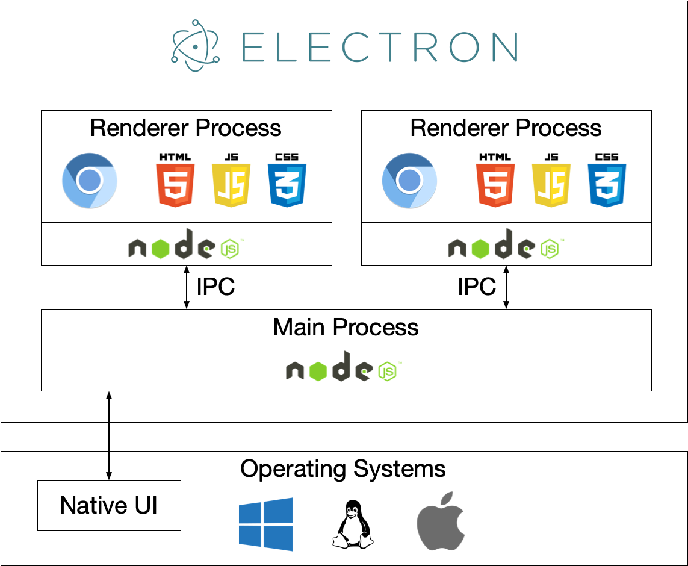

Introducción a Electron
Electrones un framework de código abierto que envuelveChromium (núcleo del navegador) + Node.js (capacidades de servidor/sistema)en una carcasa de aplicación de escritorio, permitiéndote usarHTML/CSS/JSescribir programas de escritorio multiplataforma (Windows, macOS, Linux).
Puntos clave:
- El front-end se encarga de la interfaz (proceso Renderer: como una pestaña del navegador).
- El proceso principal (Main) se encarga del ciclo de vida de la aplicación, las ventanas y las llamadas a la API nativa.
- Ambos a través deIPC (comunicación entre procesos)interactúan.
- Finalmente se puede empaquetar como
.exe、.app、.deby otros archivos de instalación.
Electron fue desarrollado y mantenido por GitHub, inicialmente creado para construir el editor Atom.
En pocas palabras:Electron = Chromium + Node.js + Native APIs
- Chromium: proporciona un potente motor de renderizado, encargado de mostrar la interfaz.
- Node.js: proporciona capacidades de backend, permite acceder al sistema de archivos, red, etc.
- Native APIs: proporciona funciones a nivel de sistema operativo, como menús, notificaciones, bandeja, etc.

¿Por qué elegir Electron?
Electron permite a los desarrolladores web crear aplicaciones de escritorio sin aprender un nuevo lenguaje, reduciendo significativamente la barrera de entrada del desarrollo de escritorio.
- Aprendizaje rápido: los desarrolladores web pueden reutilizar una gran cantidad de habilidades/componentes/ecosistema front-end (React/Vue/Angular/TS/CSS).
- Multiplataforma: escribe una vez, compila para tres plataformas (aunque hay diferencias del sistema que requieren ajustes).
- Potentes capacidades locales: acceso directo al sistema de archivos, procesos y API del sistema, sin necesidad de escribir bindings en lenguajes nativos (en la mayoría de los escenarios basta con Node.js).
- Ecosistema maduro: gran cantidad de bibliotecas, plantillas y herramientas de empaquetado (Electron Builder / Forge, etc.).
- Adecuado para aplicaciones de tipo herramienta: editores, herramientas de comunicación, software de productividad, herramientas de depuración, etc.
La filosofía de diseño de Electron es "escribir una vez, ejecutar en cualquier lugar" (Write Once, Run Everywhere).
Los desarrolladores solo necesitan escribir un solo conjunto de código para generar aplicaciones para Windows, macOS y Linux.
Ventajas principales:
- Desarrollar aplicaciones de escritorio utilizando el conocido stack tecnológico web.
- Sin necesidad de aprender lenguajes de desarrollo específicos de plataforma (como C++, Objective-C, Swift).
- Experiencia de desarrollo y base de código unificadas.
- Iteración y despliegue rápidos.
Escenarios de aplicación
Electron es adecuado para el desarrollo de los siguientes tipos de aplicaciones de escritorio:
- Herramientas de desarrollo / editores: editores de código, terminales, depuradores (como VS Code, Postman).
- Mensajería instantánea / redes sociales: clientes de chat (como Discord, Slack).
- Clientes de escritorio multiplataforma: necesita convertir rápidamente un producto web en versión de escritorio.
- Prototipos y herramientas internas: herramientas internas de operación de la empresa, paneles de datos, consolas de administración.
- Aplicaciones con altos requisitos de UI/interacción pero no extremadamente sensibles al rendimiento.。
Escenarios no adecuados: proyectos extremadamente sensibles a CPU/GPU/memoria, que requieren una experiencia nativa superior o prioridad móvil (como renderizado gráfico a gran escala, juegos de latencia ultrabaja).
¿Qué puede hacer Electron?
Electron ofrece amplias capacidades de escritorio; estas son las funciones principales que soporta:
- Abrir ventanas, menús, bandeja del sistema, notificaciones (notificaciones del sistema).
- Leer y escribir archivos, operar bases de datos locales (SQLite, LevelDB, etc.).
- Invocar comandos/binarios locales, iniciar procesos secundarios.
- Usar diálogos nativos (abrir/guardar archivos), portapapeles, arrastrar y soltar, atajos de teclado globales.
- Implementar actualización automática (auto-update), recarga en caliente, empaquetado y distribución.
- Cargar páginas web locales o remotas, admite tecnologías web modernas (WebGL, WebRTC, etc.).
- Integrar módulos nativos (C++/Node Native Addons) para acceder a hardware o funciones del sistema.
Conceptos clave (puntos técnicos)
Comprender los siguientes conceptos clave es fundamental para dominar el desarrollo con Electron:
- Proceso Main: es el punto de entrada de Electron, responsable de crear BrowserWindow, gestionar el ciclo de vida de la aplicación y las API nativas. Se ejecuta como una única instancia (Node disponible).
- Proceso Renderer: cada BrowserWindow corresponde a un renderer, ejecuta páginas web (Chromium), no accede directamente a Node (se pueden exponer API restringidas a través de preload).
- Script Preload & contextIsolation: se recomienda usar preload para inyectar API restringidas en el renderer, activando contextIsolation para mayor seguridad.
- IPC（ipcMain / ipcRenderer / contextBridge）: mecanismo de comunicación entre el proceso principal y el de renderizado.
- Herramientas de empaquetado: Electron Builder / Electron Forge / electron-packager, etc., para generar paquetes de instalación y actualizaciones automáticas.
- Auto-updater: implementa la actualización automática de la aplicación (requiere configuración de servidor/publicación).
Consideraciones de seguridad
Electron posee tanto capacidades de navegador como de Node.js, por lo que la configuración de seguridad es crucial.
Nunca actives directamente en el renderer
nodeIntegration: true, está desactivado por defecto para evitar que XSS provoque la ejecución arbitraria de comandos del sistema.
- UsacontextIsolation + preload + contextBridgepara exponer una API mínima y controlada.
- Realiza una validación estricta / sandboxing del contenido externo (URLs remotas).
- Valida estrictamente entradas como rutas de archivo, comandos shell, etc., para evitar inyección de comandos.
- Usa CSP siempre que sea posible, desactiva eval y evita scripts de terceros no confiables.
Ventajas y limitaciones de Electron
Esta sección analiza Electron de manera integral desde dos dimensiones: ventajas y limitaciones, para ayudarte a tomar decisiones técnicas razonables.
Principales ventajas
Estas son las ventajas competitivas de Electron frente a otras soluciones de desarrollo de escritorio:
1. Conveniencia del desarrollo multiplataforma
Con Electron, los desarrolladores pueden usar el mismo código base para generar aplicaciones para Windows, macOS y Linux:
Ejemplo
// El mismo código puede ejecutarse en las tres plataformas
const { app, BrowserWindow } = require('electron');
// Función para crear la ventana principal
function createWindow() {
const win = new BrowserWindow({
width: 800, // Ancho de la ventana (píxeles)
height: 600 // Alto de la ventana (píxeles)
});
// Cargar archivo HTML local
win.loadFile('index.html');
}
// Crear la ventana cuando la app esté lista
app.whenReady().then(createWindow);
Costos ahorrados:
- No es necesario mantener tres bases de código.
- El equipo no necesita dominar tecnologías de desarrollo para múltiples plataformas.
- Procesos de prueba e implementación unificados.
- Mayor velocidad de iteración de funciones.
2. Ventajas del stack tecnológico web
- Ecosistema rico: millones de paquetes disponibles en npm.
- Frameworks maduros: puedes usar frameworks front-end modernos como React, Vue, Angular.
- Alta eficiencia de desarrollo: recarga en caliente, DevTools, abundantes herramientas de depuración.
- Suficiente reserva de talento: la cantidad de desarrolladores web es enorme y es fácil reclutar.
- Desarrollo rápido de prototipos: aprovecha los componentes y bibliotecas web existentes.
3. Potente soporte de características
- Capacidades completas de Node.js (sistema de archivos, red, procesos, etc.).
- Funciones nativas de escritorio (menús, notificaciones, bandeja del sistema, etc.).
- Mecanismo de actualización automática.
- Acceso a hardware (cámara, dispositivos USB, etc.).
- Capacidad de trabajo sin conexión.
4. Comunidad activa y ecosistema
- Documentación oficial completa.
- Gran cantidad de proyectos de código abierto como referencia.
- Amplia variedad de herramientas y librerías de terceros.
- Soporte activo de la comunidad.
Principales limitaciones
Conocer las limitaciones de Electron ayuda a determinar si es adecuado para tu proyecto:
1. Sobrecarga de rendimiento
Las aplicaciones Electron deben ejecutar Chromium y Node.js simultáneamente, lo que conlleva una sobrecarga de rendimiento adicional:
- Uso de memoria: una aplicación Electron vacía suele ocupar entre 50 y 100 MB de memoria.
- Uso de CPU: el motor de renderizado y la ejecución de JavaScript son menos eficientes en comparación con las aplicaciones nativas.
- Tiempo de arranque: el tiempo de arranque es mayor en comparación con las aplicaciones nativas.
Comparación entre aplicaciones nativas y aplicaciones Electron:
| Dimensión de comparación | Aplicación nativa | Aplicación Electron |
|---|---|---|
| Uso de memoria | 10-30MB | 80-200MB |
| Tiempo de arranque | < 1 segundo | 2-5 segundos |
2. Gran tamaño del instalador
Cada aplicación Electron debe empaquetar el runtime completo de Chromium y Node.js:
- Windows: ~50-70 MB (sin comprimir).
- macOS: ~60-80 MB (sin comprimir).
- Linux: ~55-75 MB (sin comprimir).
Esto significa que incluso una aplicación simple tendrá un instalador de al menos 50 MB.
3. Consideraciones de seguridad
Debido a que Electron combina las capacidades del navegador y Node.js, si no se configura correctamente, pueden existir riesgos de seguridad:
- Los ataques XSS pueden permitir el uso indebido de permisos a nivel de sistema.
- Es necesario configurar cuidadosamente el aislamiento de contexto y el sandbox.
- Problemas de seguridad en dependencias de terceros.
4. Diferencias en la experiencia nativa
Aunque se puede simular una interfaz nativa, todavía hay diferencias en ciertos aspectos:
- No es posible replicar perfectamente los controles nativos del sistema.
- Algunas funciones a nivel de sistema son difíciles de implementar.
- Los hábitos de interacción específicos de cada plataforma requieren un manejo adicional.
Recomendaciones de equilibrio
La siguiente tabla te ayuda a determinar si Electron es adecuado según las necesidades de tu proyecto:
| Factor | Peso | Descripción |
|---|---|---|
| Eficiencia de desarrollo | 高 | Si el equipo tiene experiencia web, Electron es lo más eficiente |
| Necesidad multiplataforma | 高 | Cuando se requiere soporte para múltiples plataformas, Electron es la opción preferida |
| Requisitos de rendimiento | 中 | Aceptable para aplicaciones generales, excepto en escenarios de rendimiento extremo |
| Sensibilidad al tamaño del paquete | 中 | En el entorno moderno de redes, 50-100 MB es aceptable |
| Requisitos de seguridad | 高 | Es necesario seguir estrictamente las mejores prácticas de seguridad |
Comparación con otras herramientas similares
Electron no es la única opción; a continuación se muestra una comparación de las soluciones de desarrollo de escritorio más populares:
Si eres desarrollador frontend/full-stack y necesitasentregar rápidamente un producto o herramienta web al escritorio y poder usar directamente las capacidades del sistema, Electron es una opción altamente productiva y de baja barrera de entrada.
Pero si tienes requisitos estrictos de tamaño, memoria o experiencia nativa extrema, deberías considerar Tauri, Flutter o frameworks nativos como alternativa.
-
Tauri
- Núcleo: Rust + WebView del sistema (WebView2 / WebKit).
- Ventajas: tamaño pequeño, bajo uso de memoria, buena seguridad, adecuado para aplicaciones que priorizan la ligereza y el rendimiento.
- Adecuado para: aplicaciones de escritorio que quieren usar tecnologías web pero requieren un tamaño mínimo o son sensibles al rendimiento.
- Comparación: si quieres reutilizar rápidamente el ecosistema Node.js, Electron es más conveniente; si buscas un tamaño pequeño, elige Tauri.
-
NW.js
- De origen similar a Electron (también Chromium + Node), pero con un estilo de API diferente.
- La comunidad y las herramientas de Electron son más activas.
-
Neutralino
- Muy ligero, usa el WebView del sistema, con menos funciones que Electron.
- Más adecuado para herramientas simples o aplicaciones de escritorio pequeñas.
-
Flutter Desktop
- Usa Dart/Flutter para el renderizado, con buen rendimiento nativo y alta consistencia de interfaz.
- Adecuado para proyectos que necesitan una UI/rendimiento multiplataforma unificado, pero requiere reaprender el framework de UI (no es tecnología web).
-
React Native for Windows/Mac / .NET MAUI / Qt
- Es una ruta de desarrollo de escritorio más nativa, adecuada para proyectos con altos requisitos de integración con el sistema, rendimiento y experiencia nativa.
Recomendaciones de elección:
- Quieres convertir rápidamente un producto web a escritorio, o tu equipo es principalmente de frontend web →Electron。
- Quieres un tamaño pequeño / menor uso de recursos →Tauri/Neutralino。
- Buscas UI nativa y alto rendimiento →Flutter/Native/Qt。
Problemas comunes de rendimiento y tamaño
A continuación se presentan algunos consejos prácticos para optimizar el rendimiento y el tamaño de las aplicaciones Electron:
- Al empaquetar, activaasarla combinación de recursos (ten en cuenta la compatibilidad de los módulos nativos).
- Usa carga diferida, reduce los recursos de renderizado inicial y minimiza los recursos pesados que carga la ventana principal.
- Evita ejecutar tareas de gran carga de CPU en el renderer; usa en su lugarprocesos secundarios / workers / módulos nativos。
- Usasingle instance, y activa o desactiva la aceleración de hardware según sea necesario.
- Optimiza las dependencias: reduce los paquetes npm innecesarios y evita incluir librerías frontend enormes (o usa carga bajo demanda).
Ejemplo de inicio rápido
Conoce rápidamente la estructura básica de Electron mediante un proyecto mínimo.
Estructura de archivos del proyecto:
my-electron-app/ ├─ package.json # 项目配置与依赖 ├─ main.js # 主进程入口 ├─ preload.js # 预加载脚本（安全暴露 API） └─ index.html # 渲染进程界面
package.json(Configuración mínima):
Ejemplo
"name": "my-electron-app",
"version": "0.1.0",
"main": "main.js", // Especifica el archivo de entrada del proceso principal
"scripts": {
"start": "electron ." // npm start inicia la aplicación
},
"devDependencies": {
"electron": "latest" // Electron como dependencia de desarrollo
}
}
main.js(Proceso principal):
Ejemplo
const { app, BrowserWindow } = require('electron');
const path = require('path');
// Crea la ventana principal
function createWindow() {
const win = new BrowserWindow({
width: 900,
height: 600,
webPreferences: {
preload: path.join(__dirname, 'preload.js'), // Ruta del script de precarga
contextIsolation: true, // Habilita el aislamiento de contexto (recomendado)
nodeIntegration: false // Desactiva la integración con Node para mayor seguridad
}
});
win.loadFile('index.html');
}
// Crea la ventana cuando la aplicación esté lista
app.whenReady().then(createWindow);
// macOS: no salir de la aplicación al cerrar todas las ventanas (según la convención de macOS)
app.on('window-all-closed', () => {
if (process.platform !== 'darwin') app.quit();
});
preload.js(Exposición controlada de API):
Ejemplo
const { contextBridge, ipcRenderer } = require('electron');
// Expone una API segura al proceso de renderizado mediante contextBridge
// El proceso de renderizado puede acceder a través de window.electronAPI
contextBridge.exposeInMainWorld('electronAPI', {
// Envía un mensaje al proceso principal (solo permite los canales de la lista blanca)
send: (channel, data) => {
const validChannels = ['ping']; // Lista blanca: canales permitidos
if (validChannels.includes(channel)) {
ipcRenderer.send(channel, data);
}
},
// Recibe mensajes del proceso principal (solo permite los canales de la lista blanca)
on: (channel, func) => {
const validChannels = ['pong']; // Lista blanca: canales permitidos
if (validChannels.includes(channel)) {
// Elimina el parámetro event y solo pasa los datos de negocio al callback
ipcRenderer.on(channel, (event, ...args) => func(...args));
}
}
});
index.html(Interfaz del proceso de renderizado):
Ejemplo
<html>
<body>
<h1>Hello Electron</h1>
<button id="ping">Ping al proceso principal</button>
<script>
// Al hacer clic en el botón, envía un mensaje ping al proceso principal
document.getElementById('ping').addEventListener('click', () => {
window.electronAPI.send('ping', { time: Date.now() });
});
// Escucha el mensaje pong respondido por el proceso principal
window.electronAPI.on('pong', (msg) => alert('pong recibido: ' + JSON.stringify(msg)));
</script>
</body>
</html>
En el proceso principal, escucha IPC (agregar a main.js):
Ejemplo
const { ipcMain } = require('electron');
// Escucha el mensaje ping enviado desde el proceso de renderizado y responde con pong
ipcMain.on('ping', (event, data) => {
console.log('ping recibido, datos:', data);
event.sender.send('pong', { reply: 'ok', received: data });
});
Ejecutar:
# 安装依赖 npm install # 启动应用 npm start
Empaquetado y distribución
Después de completar el desarrollo, necesitas usar una herramienta de empaquetado para distribuir la aplicación a los usuarios.
Comparación de herramientas de empaquetado comunes:
| Herramienta | Función | Caso de uso |
|---|---|---|
| Electron Builder | Potente, compatible con auto-update e instaladores multiplataforma | Proyectos de producción que necesitan una solución de distribución completa |
| Electron Forge | Desarrollo amigable, integra plantillas y flujo de compilación. | Inicio rápido para nuevos proyectos. |
| electron-packager | Solo empaquetar, sin crear instalador. | Necesidades de empaquetado simples. |
Pasos comunes de empaquetado:
- Configuración
package.jsoncampo build de la configuración (o usar la config de cada herramienta). - Usa CI/CD para compilar en diferentes plataformas (Windows requiere empaquetar en entorno Windows o usar un servicio de compilación cruzada).
- Implementa un servidor de actualizaciones o usa GitHub Releases + electron-updater.
Consejos prácticos y lista de mejores prácticas
Las siguientes recomendaciones provienen de experiencia en proyectos reales y te ayudarán a evitar errores comunes:
- Al comenzar: usar TypeScript + andamiaje de empaquetado (Forge/Builder) ahorra costos de mantenimiento futuros.
- Seguridad: forzar
contextIsolation: true, minimizar la API expuesta al renderer. - Arquitectura: coloca la lógica de negocio en el renderer (interfaz) o en un servicio backend; las operaciones del sistema/permisos se encapsulan a través del proceso principal.
- Actualización: usa electron-updater para actualizaciones automáticas, pero presta atención a la firma y a la estrategia de publicación (macOS requiere firma, Windows también necesita firma de código).
- Pruebas: prueba en máquinas reales en múltiples plataformas (especialmente permisos de archivos, rutas, variables de entorno).
- Recursos: revisa periódicamente las versiones de Chromium y Electron, y presta atención a los parches de seguridad (las vulnerabilidades de Chromium afectan a la aplicación).
Cuándo no usar Electron
No se recomienda usar Electron en los siguientes escenarios:
- Necesitas un uso de memoria extremadamente bajo o un paquete de instalación muy pequeño (por ejemplo, dispositivos integrados o herramientas minimalistas).
- Se necesita UI nativa y rendimiento nativo extremos (por ejemplo, juegos AAA o CAD complejo).
- Si el equipo no está familiarizado con tecnologías web pero sí con desarrollo nativo, los frameworks nativos pueden ser más adecuados.
Ruta de aprendizaje y recursos recomendados
Sigue la siguiente ruta paso a paso para dominar sistemáticamente el desarrollo con Electron:
- Aprende Node.js básico y frontend (HTML/CSS/JS)/frameworks (React/Vue).
- Lee la documentación oficial de Electron (Main/Renderer/Preload/IPC/guía de seguridad).
- Crea un ejemplo mínimo (el ejemplo anterior) y experimenta con IPC, operaciones de archivos y control de ventanas.
- Aprende y usa herramientas de empaquetado (Electron Builder / Forge).
- Lee tutoriales sobre mejores prácticas de seguridad, actualización automática y firma de código.
- Consulta proyectos Electron de código abierto maduros (como fragmentos del código fuente de VS Code) para aprender arquitectura.
Haz clic para compartir notas
<p style="font-size:14px;">¡La nota debe ser una extensión del contenido de este artículo!</p><br> <p style="font-size:12px;"><a href="../tougao.html" target="_blank">Para enviar un artículo, haz clic aquí</a></p> <p style="font-size:14px;"><a href="../w3cnote/runoob-user-test-intro.html" target="_blank">Cómo obtener un código de invitación de registro</a></p> <h3 class="text-muted"><i class="fa fa-info-circle" aria-hidden="true"></i> ¡Antes de compartir una nota, debes <a href=";.html" class="runoob-pop">iniciar sesión</a>!</h3> <p><a href="../w3cnote/runoob-user-test-intro.html" target="_blank">Cómo obtener un código de invitación de registro</a></p>